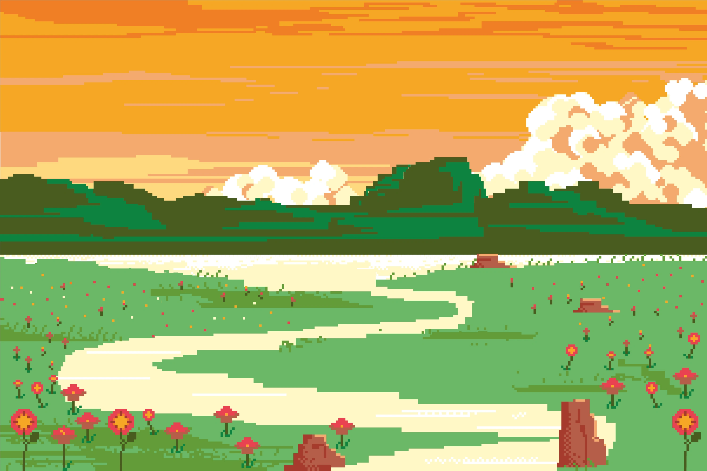

Pick your decade
“Retro” isn’t one style — it’s a costume box. Each era of design has unmistakable signature cues. Hit a button and this entire page re-themes itself: colors, type, borders, the works.
1980s Neon: dark backgrounds, glowing magenta and cyan, chrome gradients and gridlines — the visual language of arcades, VHS covers, and airbrushed sci-fi paperbacks.
RETRO / VINTAGE
Blast from the Past!
A retro or vintage website offers more than visual appeal — it creates a nostalgic
experience that connects deeply with its audience. The style borrows classic elements
such as ornate or period-correct typography, muted or era-specific color palettes, and
textured backgrounds to evoke familiarity and charm.
It’s perfect for brands that want to highlight heritage, authenticity, and craftsmanship.
Retro design builds an emotional connection with people who value timeless aesthetics,
and it sets a business apart from the uniformity of modern web trends. Done well —
blending nostalgia with real usability — a retro site leaves a lasting impression and
tells a story no template can.
